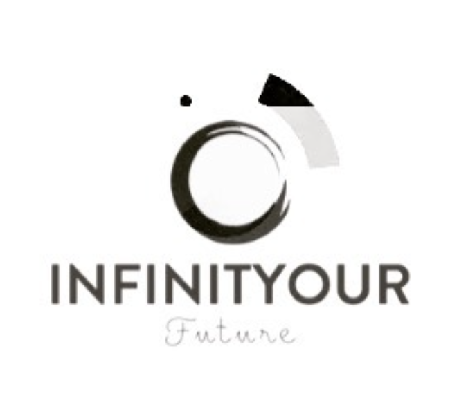

<!DOCTYPE html>
<html lang="en"></html>

<head>
<title>INFINITY OUR FUTURE</title>
        
<link rel="stylesheet" href="styles.css">

</head>

    <body>
        
        <h1>Your future | Your choice</h1>
        <div class="image-container">
        

        <h2>Unlock it</h2>
        <p>As you embark on this new academic journey, I want to remind you that within each of you lies untapped potential waiting to be unlocked. You must unlock your full potential. This is your time to push boundaries, challenge yourself, and discover the greatness that you are capable of. Every step you take, no matter how small, brings you closer to a brighter future. Believe in your abilities, stay curious, and embrace the challenges ahead. They are opportunities for growth. Your hard work and dedication will open doors to endless possibilities. Let this journey be the foundation of the future you envision—one full of success, achievement, and fulfillment. You have got this</p>

        <h2>Empower it</h2>
        <p>Empowering your future starts with the choices you make today. Education is more than just gaining knowledge! It's about equipping yourself with the tools and confidence to navigate an ever-changing world. By committing to your personal and professional growth, you're laying the groundwork for success and opening doors to opportunities that might have once seemed out of reach. Every new skill you learn, every challenge you overcome, adds to your ability to shape your own destiny. Remember, the power to create the future you want lies in your hands, and it begins with the decision to invest in yourself.</p>
        
        <h2>Achieve it</h2>
        <p>By choosing to step out of your comfort zone and commit to personal growth, you've already done something extraordinary. Most people stay where they are, afraid to take the leap, but you’ve proven that you’re different—you’re a doer, a visionary, and someone who isn’t afraid to challenge the status quo. This decision to change your life through education puts you ahead of the curve, setting you apart from those who settle for less. Remember, it takes courage to transform, and you’ve already shown you have that strength. Be proud of your journey, because you’re already on the path to greatness, and that’s something many only dream of. You are going to achieve great things. Step by step.</p>

        <h1>.</h1>
        <div class="image-container">
        
        <h1>.</h1>

        <h3>Do not wait until the conditions are perfect to begin. Beginning makes the conditions perfect. The clock is ticking and no one is going to save you but you.</h3>

        <a href="https://www.instagram.com/infinityourfuture/" 
        target="_blank" class="button">Drop me a DM</a>

    </body>

</html>